Verkefnið skiptist í tvennt: Notaðu vínylskerann til að búa til eitthvað og hannaðu parametrískt, geirneglt módel af byggingareiningum. Módelið þarf að vera skalanlegt á mismunandi máta (efnisþykkt, hæðir og breiddir sem nemandi velur), útfært með parametríum í hugbúnaði að eigin vali.
Vínylskurður
Fyrsti partur verkefnisins er var að búa eitthvað til með vínylskera.Ég byrjaði á að leita á google að simple silouhette free mynd og fann þessa á síðunni Vecteezy 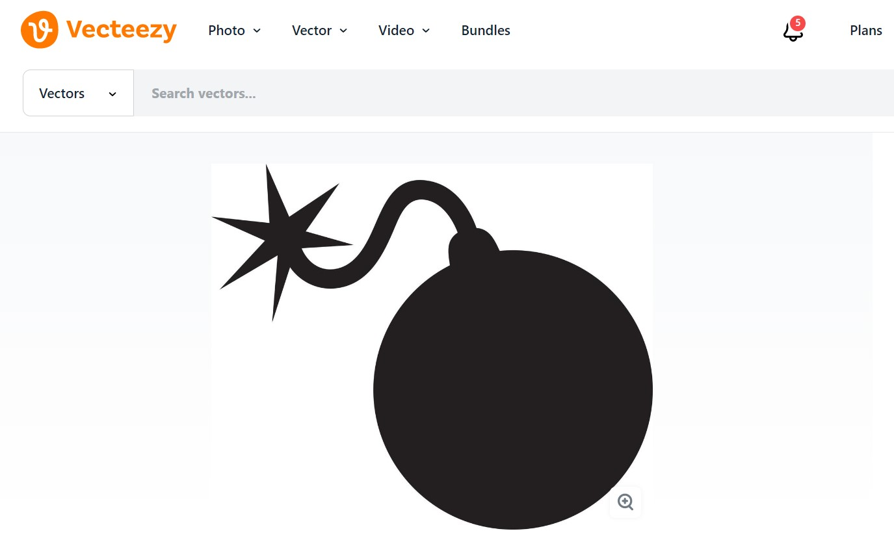
Síðan færði ég þess mynd í Inkscape
Ég byrjaði á að nota Trace Bitmap til að ná útlínunum af myndini sem ég vildi. Etir það eyddi ég myndinni og hafði þá bara útlínurnar eftir. Síðan opnaði ég Fill and Stoke til að taka fyllinguna úr myndinni og hafa bara útlínurnar eftir sem ég stillti á 0,02 mm þykkt. Síðan vistaði ég myndina sem PDF og senti á vínilskerann.
Siðan skar vínylskerinnn og ég var kominn með límmiðann minn og svona var útkoman.
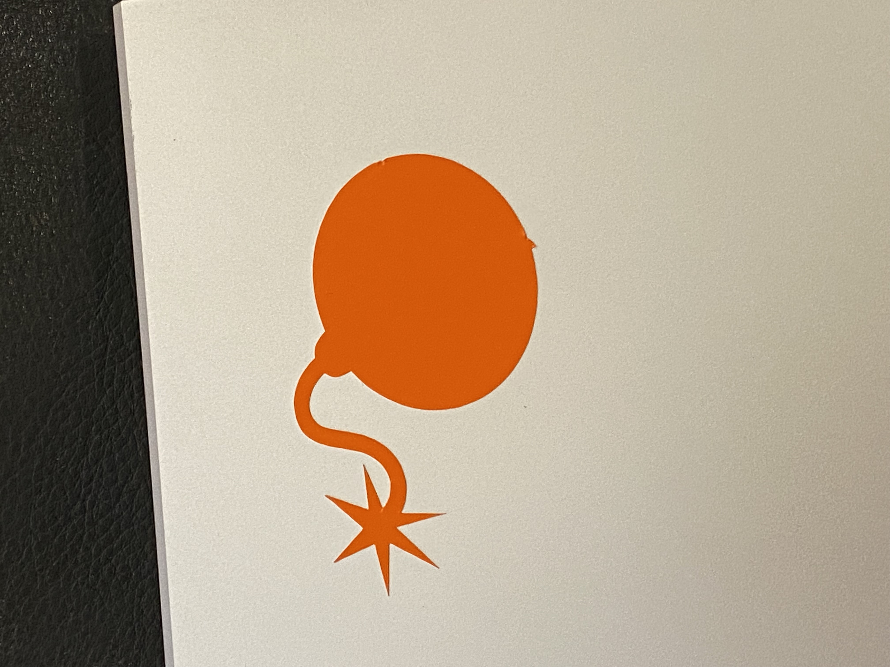
Laserskurður
Ég var lengi að vellta fyrir mér hvað ég ætti að hanna og hvernig ég ætti að nota parametríska hönnun líka. Eftir að hafa googlað mikið og hugsað þá datt mér í hug að búa til tic tac toe borð.
Ég notaði Fusion 360 í hönnun þessa verkefnins.
Ég byrjaði á að hann boxið sjálft sem er botnflötur og hliðarfletir, ég notaði kennslumyndmand sem kennarinn gaf okkur til að styðja mig við að gera að. Hér er kennslumyndbandið .
Ég bjó til parametra og hannaði hliðarnar og botnflot þannig að ég get breytt lengd, breydd, hæð, þykkt og fjölda "fingra" eins og ég vil og allt stækkar í samræmi við það. 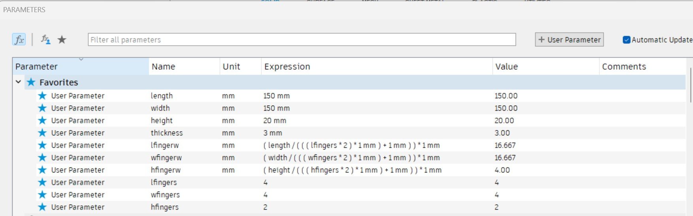Hér eru myndir af hönnununni af boxinu sjálfu: 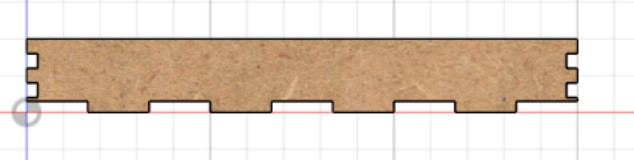 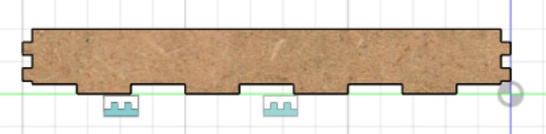 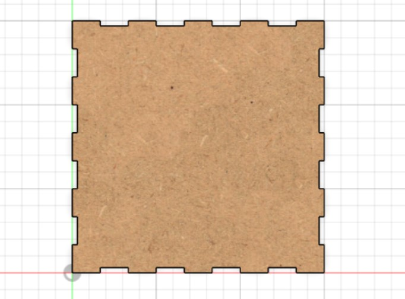Lengd og briedd er 150mm síðan er fjöldi fingra á lengd og breidd 4 og fjöldi fingra á hæð 2 þar sem hæðin er bara 2cm, þykkt efnisins er 3mm þar sem akríllinn sem ég ætla nota er 3mm þykkur.
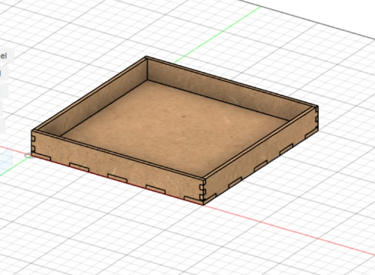Síðan hannaði ég 4 bita sem skipta boxinu/borðinu í 9 hluta eins og á hefðbundnu tic tac toe borði. Það var frekar einföld hönnun
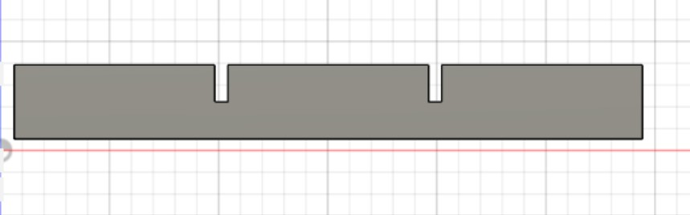
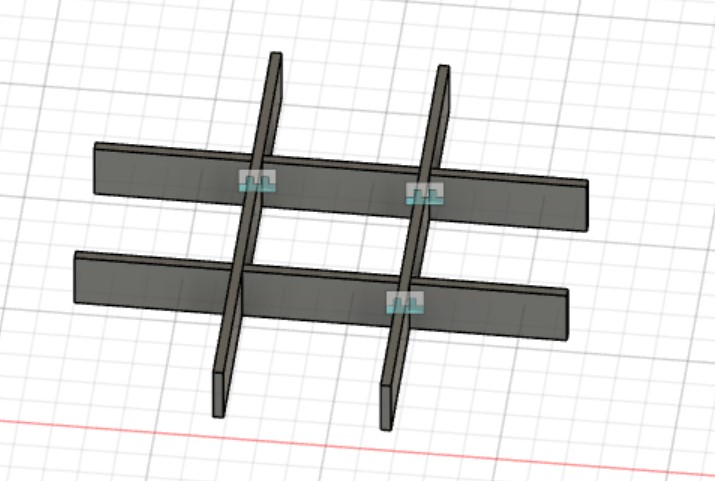
Þeir eru 146mm í lengd þar sem þetta þarf að komast inn í boxið.
Síðan gerði ég x-in og o-in, það var einfallt hafði þau bara nógu lítil til að passa í hólfin.
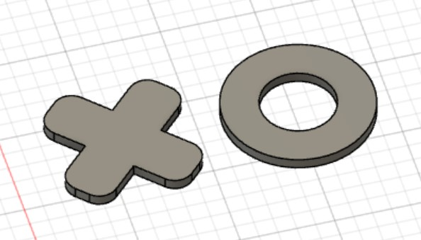
Síðan í heildina lítur þetta svona út.
 En þar sem ég gerði þetta með parametríum gæti þetta litið öðruvísi út til dæmis svona, ef ég breyti lengdinni í 30cm.
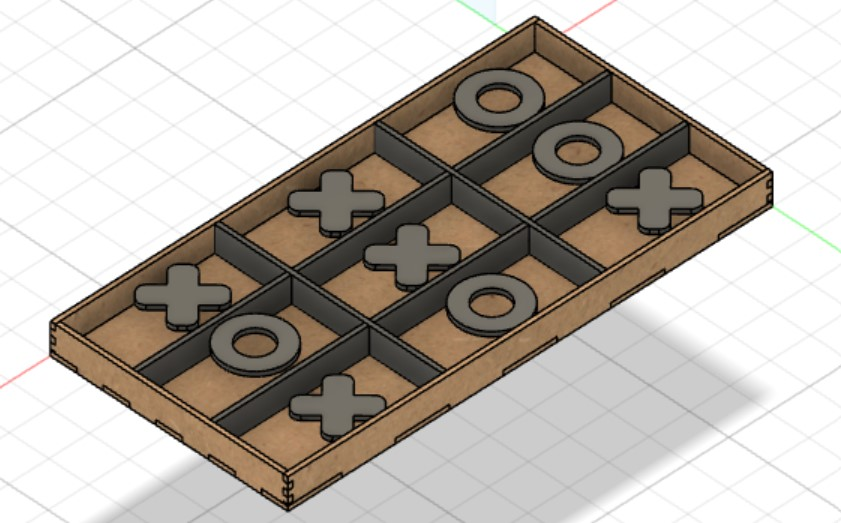
En þar sem ég gerði þetta með parametríum gæti þetta litið öðruvísi út til dæmis svona, ef ég breyti lengdinni í 30cm.
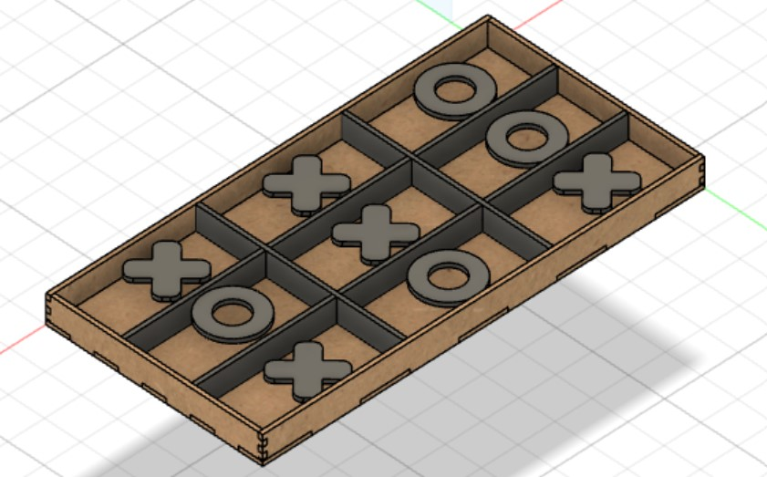
Kerf
Kerf er þykkt leisersins sem notaður er. Mikilvægt er að mæla hann þar sem miklivægt er að gera ráð fyrir honum við hönnun verkefnis.
Áður en ég gat skorið út þá þurfti ég að vita kerf-ið á laserskeranum. Það var gert með að láta hann skera út 10 box öll 1cm á lengd sem eru þá 11 skurðarlínur og sjá frávikið.
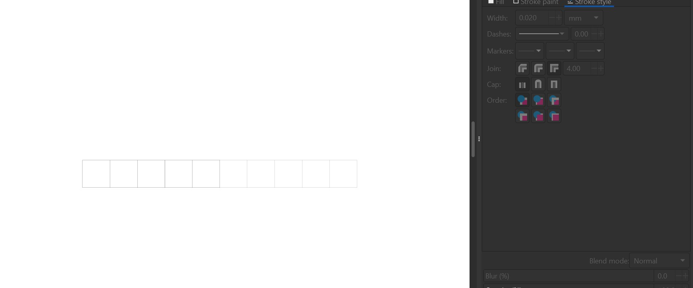
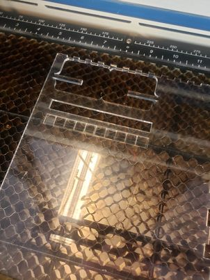
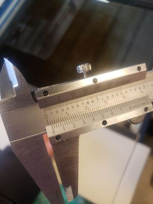
Sjáum að bilið sem er eftir þegar við þjöppum saman kubbunum er 1.4mm. Deilum því með 11 og þá er kerf-ið um það bil 0.13mm. Ég vann þennan hluta verkefnisins með Bjarna og Daníel.
Síðan fór ég í það að exporta teikninguna mína. Ég byrjaði á því að aligna alla íhluti að botnfletinum svo þeir væru allir flatir og raðaði þeim upp. 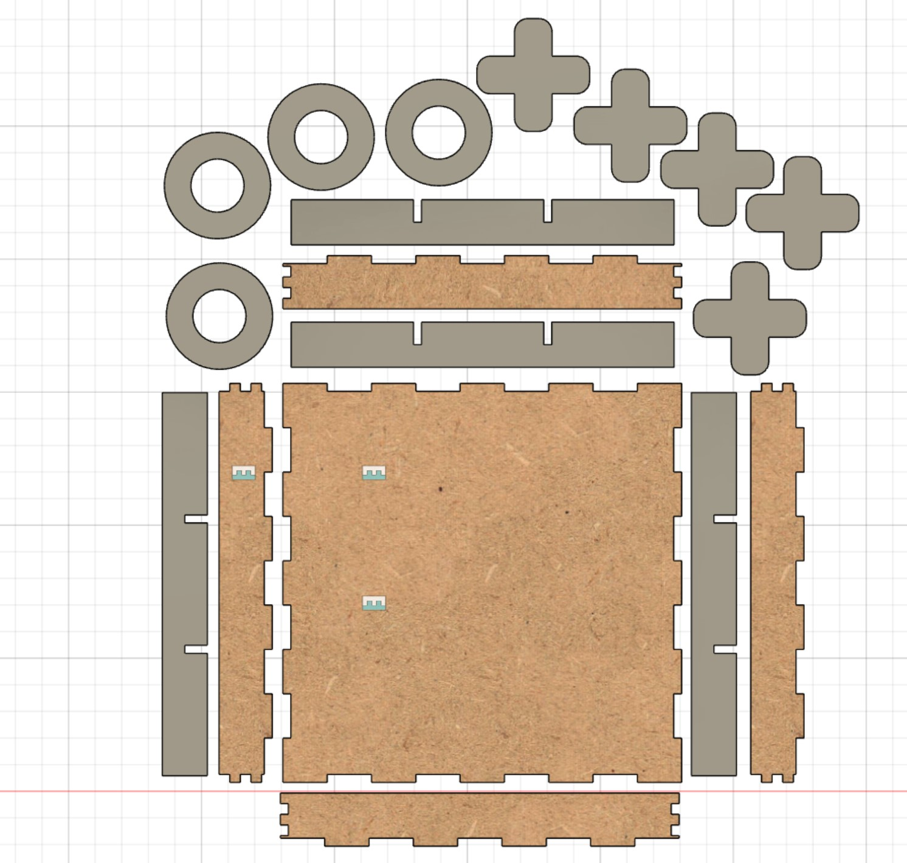 Síðan fór ég eftir þessu myndbandi til að bæta inn kerf-i og exporta sem dxf skrá til að færa yfir í inkscape.
Eftir að hafa align-að alli íhluti fór ég yfir í manifacturing í fusion 360 og gerði nýtt setup. Valdi cutting og stillti tool þannig að það hafði kerf sem var 0.13mm.
Eftir það fór ég í post process og vistaði skjalið sem dxf skrá og færði yfir í inkscape.
Svona lítur þetta út í inkscape. 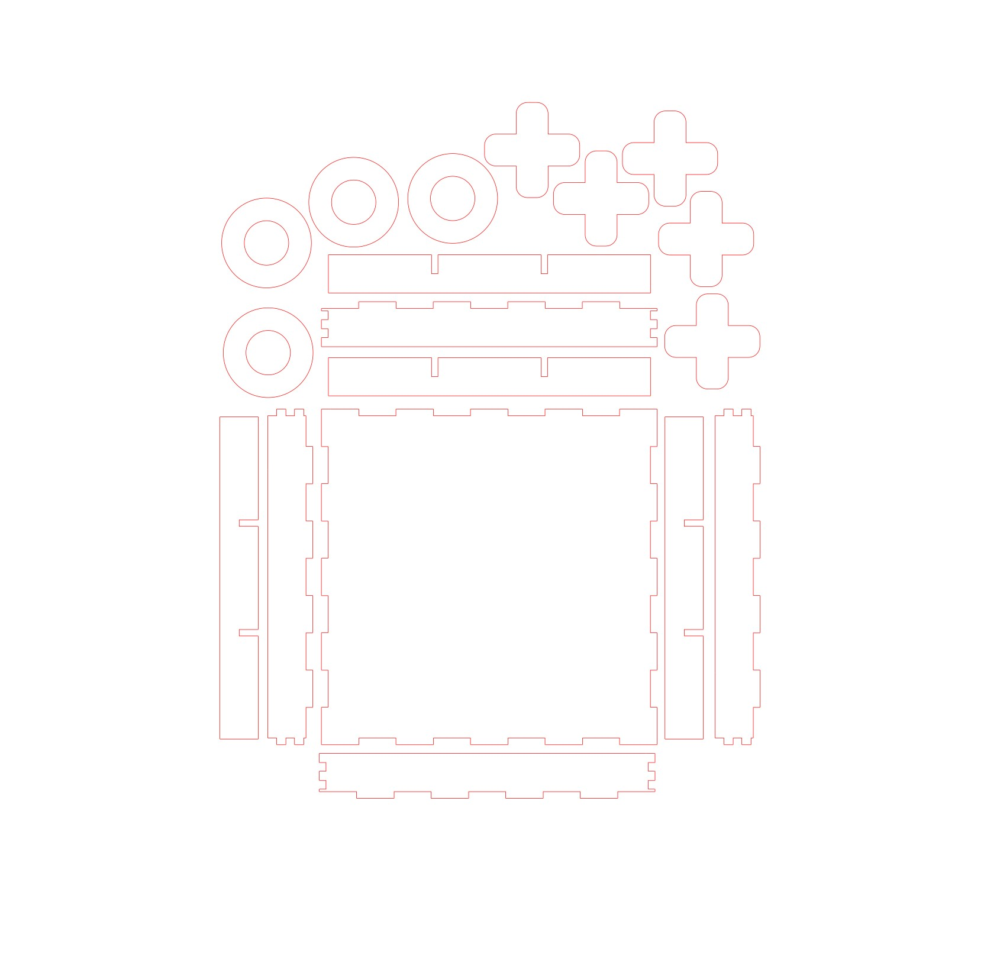 Mörg horn voru ekki rétt tengd saman svo ég valdi edit paths, báðar línurnar sem átti að tengja saman, valdi punktinn á milli þeirra og ýtti á join nodes. Ég þurfti að gera þetta á öllum söðum þar sem eru fingur. Síðan stillti ég línuþykkt á 0.02mm og valdi no fill og line. Síðan vistaði ég skránna sem svg skrá.
Eftir þetta kom að skurðinum. Ég opnaði skjalið frá inkscape í forriti sem tengist við prentarann. Stillti þar að ég væri að fara skera út 3mm akkríl plötu og staðsetti skurðinn þannig að hann passaði best á plötuna. Síðan byrjaði ég skurðinn.
Skurðurinn var mjög fjótur, tók um það bil 3 mín. 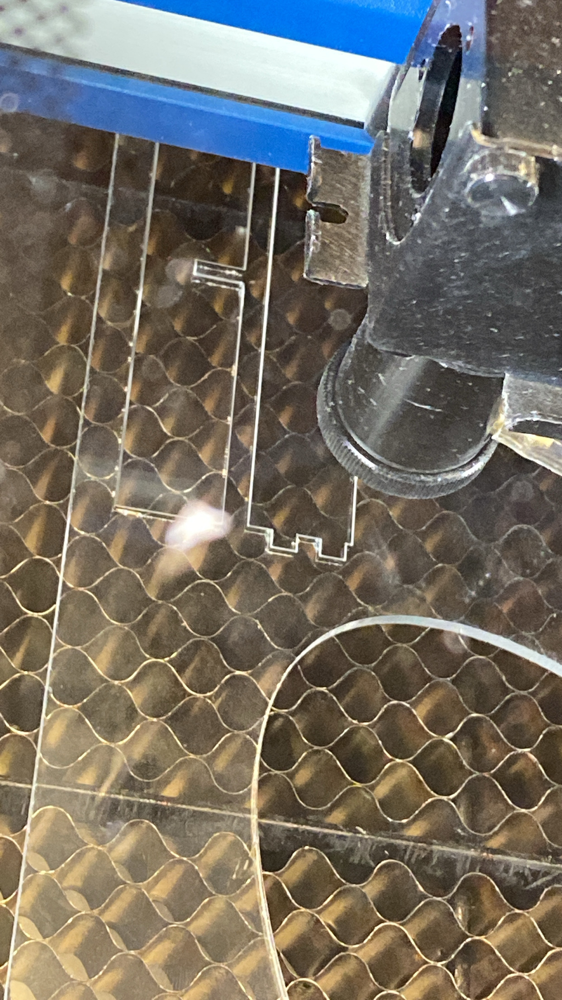
Síðan setti ég þetta allt samam, allt passaði og þetta kom mjög vel út. Ég er mjög ánægður með útkomuna. Hér er útkoman.
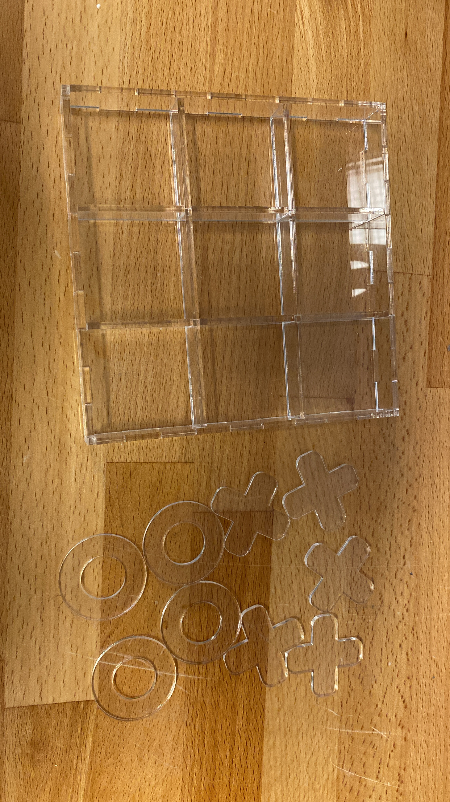
Tímaskráning
| Tími | Vinna |
|---|---|
| Hugmyndarvinna | 2 klst |
| Fusion 360-Teikning og export | 5 klst |
| Kerf | 0.5 klst |
| Laserskurður og samsetning | 2 klst |
| Vínylskurður | 1 klst |
| Vefsíðugerð | 6 klst |
| Heildartími | 16.5 klst |